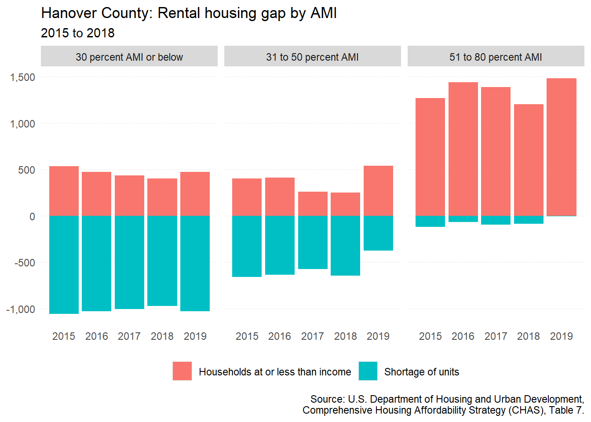
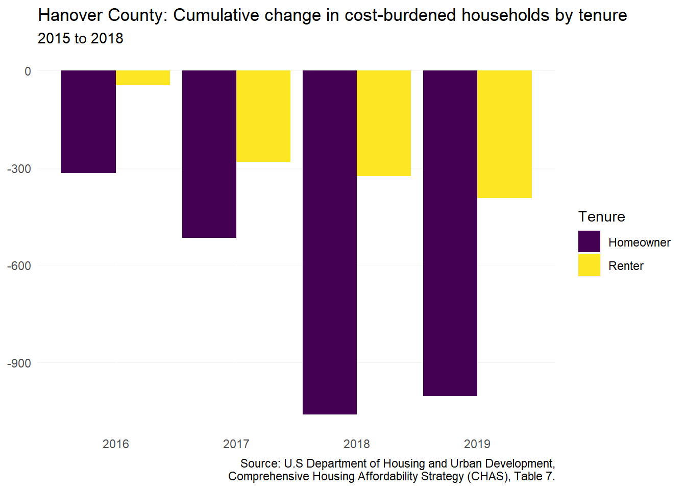

14 Hanover County
This chapter is a summary of the major changes to the Hanover County’s population and housing market in the past five years.
14.1 Takeaways
- More and more people are moving into Hanover County from other parts of the region, state, or nation (+1,747), while deaths are outpacing births (-271) from 2020 to 2021.
- Hanover County is losing households with children — both homeowners and renters (-725 between 2016 and 2020).
- There has been a net decrease in households making less than $100,000 — especially among renters (-950) — suggesting growing unaffordability in the county.
- Median home price in the county has increased to well over $400,000 — becoming one of the most expensive localities in the region.
- Rents in the county rose steeply amid the pandemic and record low vacancy rates.
- A household needs to earn nearly $70,000 to afford the median home price in the county in 2020 — roughly $17,000 more than what the typical renter earns.
14.2 Demographic and socioeconomic changes
14.2.1 Population changes
Between 2011 and 2012, Hanover County passed the 100,000 mark and has continued to grow ever since. From 2010 to 2020, the county has grown by 10 percent — an increase of 10,116 residents.
The overwhelming reason for population increases in the last several years has been due to domestic migration. From 2020 to 2021, 1,747 new residents moved into Hanover County from some other part of the region, state, or country. From 2016 to 2019, international migration and natural increases made up a small portion of change compared to domestic migration. But during the 2020 to 2021 period, Hanover County experienced a loss of 271 due to natural decreases (i.e. deaths outpacing births in the county).

14.2.2 Household characteristics
Households with children, both homeowners and renters, have been on the decline in Hanover County. Between 2016 and 2020, there was an overall decrease of 725 households with children. Nonfamily renter households also saw a decline (-226), but nonfamily homeowner households saw the greatest increase of household types during this time period (+1,278).
As with most of the region, the senior population in Hanover County has seen major growth. From 2016 to 2020, the senior population increased by 3,154. Most of this growth has been among seniors living with a spouse (+1,167), followed by seniors living alone (+888).
14.2.3 Income and wages
In Hanover County, there was a $45,460 difference between median homeowner household income and renter household income. The disparity in income has remained steady between 2016 and 2020. But in the county, renter median household income has increased by 19 percent from 2016 to 2020, while homeowners income has only increased by 2 percent.
The growth in median renter household income in the county can be shown to be due to a large decrease in renter households making less than $75,000 and an increase in renters with higher incomes.
14.2.4 Persons with disabilities
While other localities have seen significant increases in adults below 65 years old with independent living difficulties, Hanover County has seen the greatest growth among those aged 75 years and older. With a growing number of aging seniors unable to live with comfortably without assistance, there will be a growing need for assisted living facilities and resources to support aging-in-place.
14.3 Housing supply and market changes
14.3.1 Homeownership
During the early part of 2022, median home price in Hanover County passed into the $400,000s. From March 2020 to June 2022, there has been a 32 percent increase in the median home price for the county.
14.3.2 Rental
Rental properties across Hanover County are largely located in the Town of Ashland and along the Hanover-Henrico border near Route 1 and Mechanicsville. The Hanover County rental market has been seen continual average asking rent increases since 2016. From the end of Q3 2021 to Q3 2022, rents in Hanover County grew significantly from $1,272 to $1,492 — a 17 percent increase. During this time, the Hanover County rental vacancy rate dropped well-below 1 percent.
14.3.3 Housing assistance
Over the last two and a half years, almost 500 new affordable rental unit subsidies were added in the county. Another 100 contracts expired (across just one property), leading to a net gain of 389 dedicated affordable rental units—more than Henrico County over that same period.
| Subsidies | Properties affected | Units included | |
|---|---|---|---|
| Added | 5 | 4 | 489 |
| Removed | -1 | -1 | -100 |
| Net change | 4 | 3 | 389 |
| Sources: National Housing Preservation Database and Virginia Housing. |
14.3.4 Naturally-occurring affordable housing
As defined by this report, there are only five NOAH multifamily properties located in Hanover County. Across these five properties there is a total of 492 rental units. NOAH properties in Hanover County were built between 1966 and 1987.
| Property name | Year built | Estimated units |
|---|---|---|
| Ashland Towne Square Apartments | 1973 | 218 |
| LakeRidge Square Apartments | 1987 | 156 |
| Signal Hill Apartments | 1966 | 68 |
| Windmill Way Apartments | 1987 | 50 |
This estimate does not include four manufactured home communities located in the county — which include a total of 497 homes. Based on the Manufactured Home Community Coalition of Virginia’s assessment of manufactured home communities in Central Virginia, these four communities are relatively stable.
| Community name | Estimated units |
|---|---|
| Sedgefield Manufactured Home | 247 |
| Colonial Estates | 115 |
| Kosmo Village | 92 |
| Palm Leaf Mobile Home Park | 43 |
14.4 Gap analysis
14.4.1 Affordability of current housing stock
In 2020, median renter household income was $53,832. A household at this income would need an estimated rent of $1,345 to not be cost-burdened. In comparison to average asking rent in the county, the typical renter could afford the the average rent by more than $200. This could be a reflection of the growing number of higher income renters coming into the county as previously noted.
Attaining homeownership has generally been harder with the median renter incomes. Before 2020, average renter incomes were only enough to support home prices that were tens of thousands below the median-priced home in the county. As rates dropped in 2020, renters could compete more confidently in the market—but this is likely no longer the case as rates (and prices) have risen significantly.
In spite of growing income among renters in the county, there was a shortage of 1,705 rental units for households making less than 80 percent AMI. This is a decrease from 2015 when the shortage was 1,840, but still represents a significant number of Hanover renters living in housing that is too expensive for them.
The deficit has decreased across all income levels below 80 percent AMI, but the below 30 percent AMI income group remains the most in need of new affordable rental options.

14.4.2 Impact of housing costs
In spite of the continuous increase in housing costs in Hanover County, there has been an overall decrease in the number of cost-burdened households from 2015 to 2019. As of 2019, there were 1,004 fewer cost-burdened homeowners and 393 fewer cost-burdened renters.

With fewer renters in the county, there have also been fewer eviction filings and judgements preceding the pandemic. Before the pandemic, Hanover County barely saw more than 75 eviction filings in a given month.
During eviction protections of the pandemic, filings dropped below 20 a month, while eviction judgements dropped below 10. As new data is released, Hanover County should watch carefully for sudden increases.